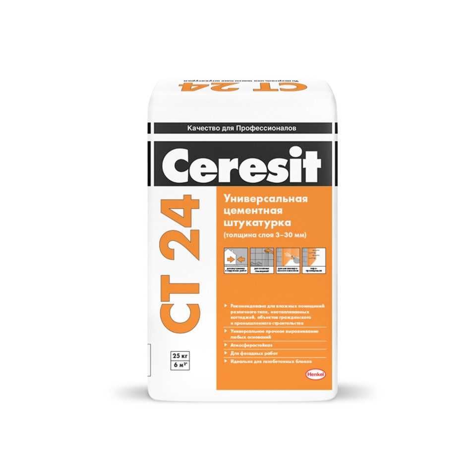
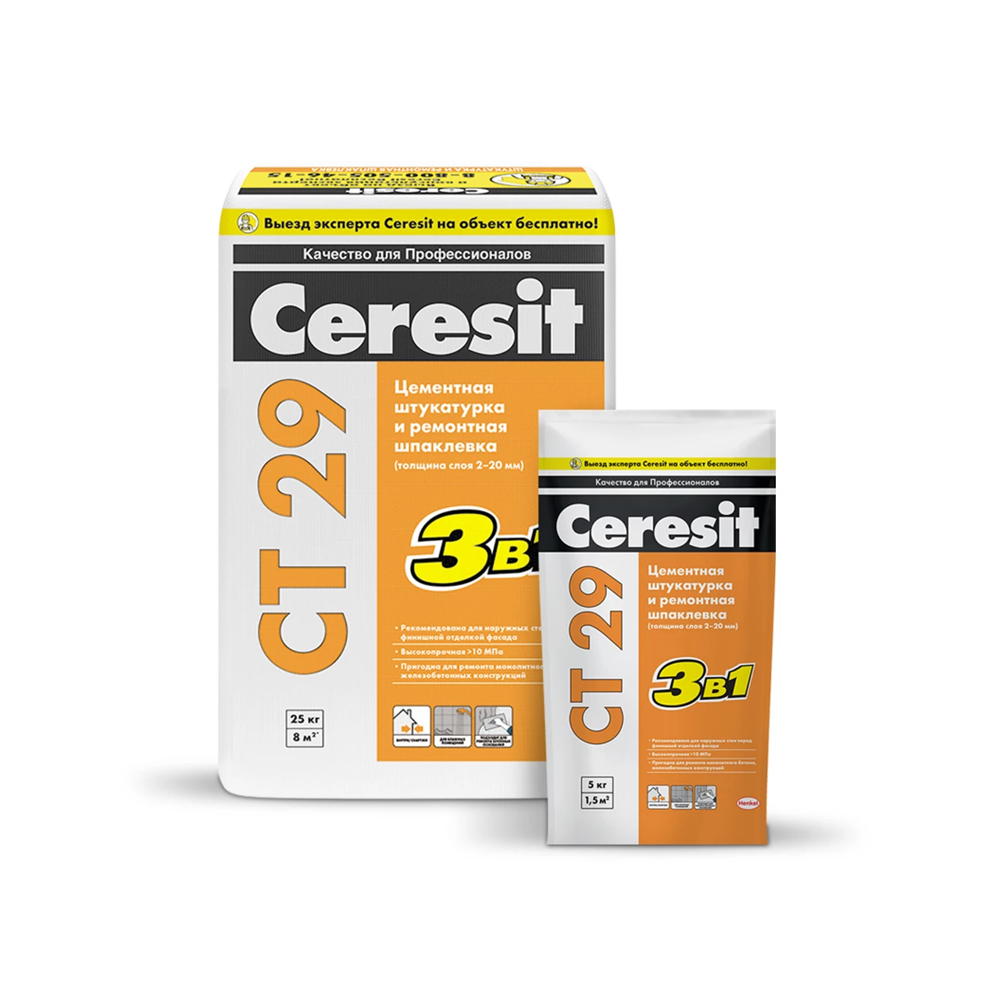
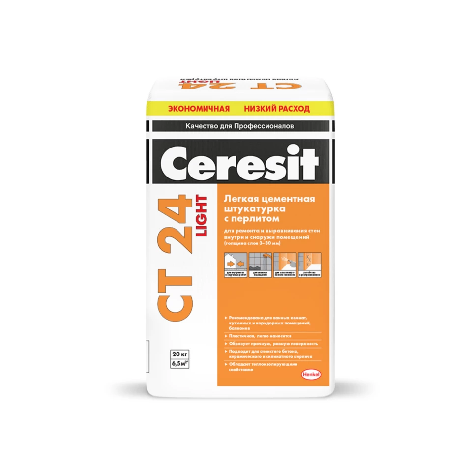
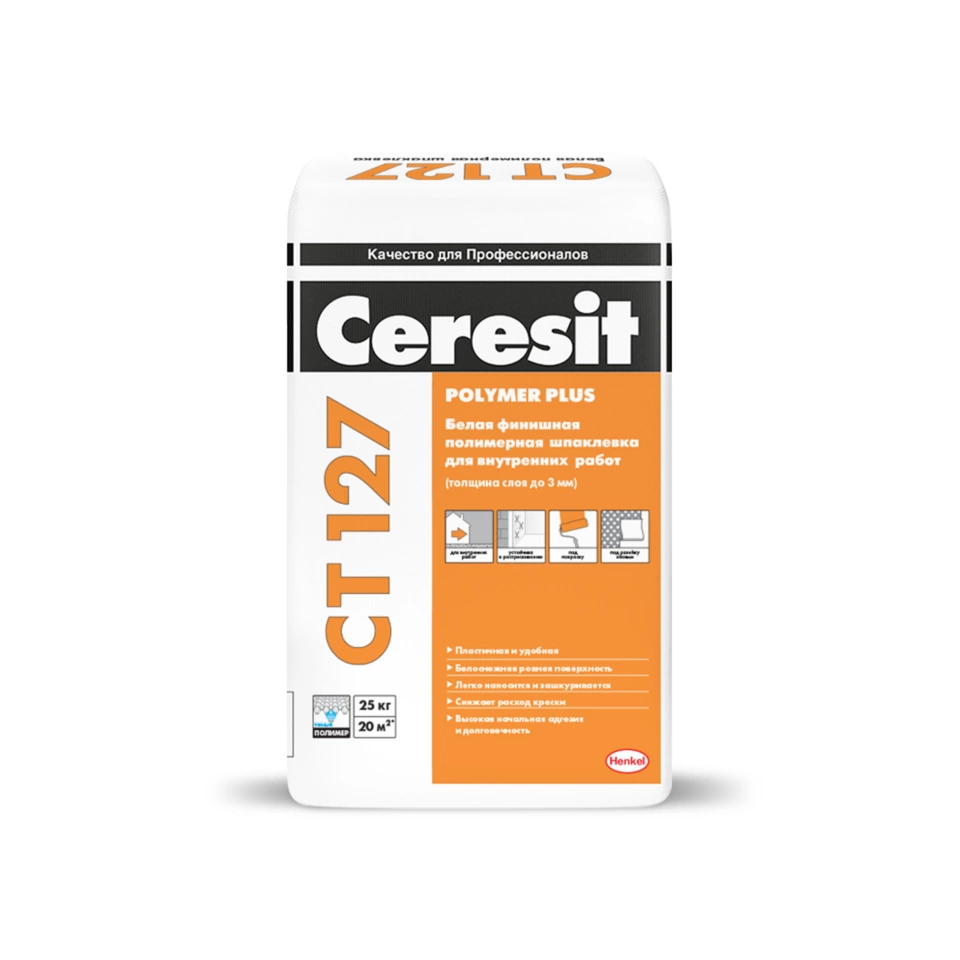
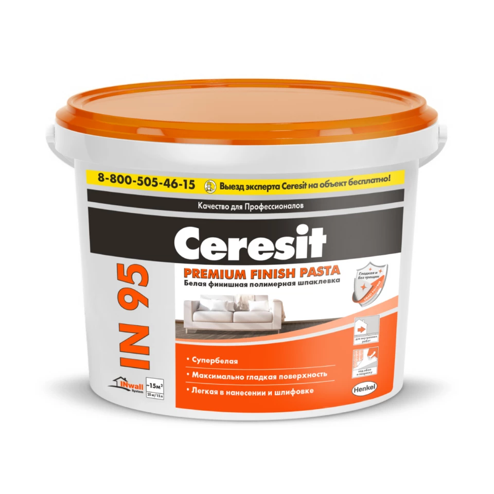

ШТУКАТУРКИ
CT 24
 Штукатурная смесь CT 24 предназначена для ремонта,
выравнивания и оштукатуривания оснований из ячеистого бетона
(пено- и газобетона, пено- и газосиликата) на стенах внутри и
снаружи зданий, как при ручном, так и механизированном
нанесении.
- обладает высокой адгезией к ячеистому бетону;
- паропроницаемая;
- атмосферостойкая;
- пластична и удобна в работе;
- пригодна для механизированного нанесения;
- пригодна для внутренних и наружных работ;
- экологически безопасна.
Может применяться для заполнения раковин, сколов и других
дефектов ячеистого и легкого бетона, ремонта старых штукатурок и кладок
и т.д. За один проход смесь можно наносить слоем толщиной
от 3 до 30 мм.
CT 29
 Цементная смесь для оштукатуривания и тонкослойного
выравнивания минеральных оснований.
Штукатурка и ремонтная шпаклевка CT 29 предназначена для
ремонта, выравнивания и оштукатуривания цементно-
известковых, цементно-песчаных, бетонных и кирпичных
оснований на стенах и потолках внутри и снаружи зданий,
как при ручном, так и механизированном нанесении.
- обладает высокой адгезией к основаниям;
- содержит армирующие микроволокна;
- паропроницаемая;
- атмосферостойкая;
- пластична и удобна в работе;
- пригодна для механизированного нанесения;
- пригодна для внутренних и наружных работ;
- экологически безопасна;
- доступна в фасовке 5 и 25 кг.
Может применяться для заполнения раковин, выбоин, трещин и
убылей, тонкослойного выравнивания поверхностей и нанесения
штукатурных покрытий. За один проход смесь можно наносить слоем
толщиной от 2 до 20 мм.
CT 24 LIGHT
Легкая штукатурная смесь CT 24 LIGHT предназначена для ремонта и
выравнивания стен, в том числе выполненных из материалов с
низкой плотностью и высокой пористостью, внутри и снаружи
зданий.
- расход ниже на 20–25%;
- подходит для ячеистого бетона, керамическогои силикатного
кирпича; - обладает теплоизолирующими свойствами;
- пригодна для механизированного нанесения;
- пригодна для внутренних и наружных работ;
- для помещений любой степени влажности;
- устойчива к растрескиванию;
- морозостойкая.
Применяется на таких основаниях как ячеистый бетон
(газобетон, газосиликат, пенобетон и др.), легкий
бетон (керамзитобетон, шлакобетон и др.),кладки из
поризованных керамических блоков, керамического и
силикатного кирпича; цементно-песчаные и
цементно-известковые штукатурки, бетон и т.д. Пригодна
для нанесения как ручным, так и механизированным
способом. За один проход штукатурную смесь можно
наносить слоем толщиной от 3 до 30 мм. Прекрасно
подходит для применения на непрочных пори стых
основаниях без риска образования трещин и
отслаивания. Идеальна для отделки стен влажных помещений.
ШПАКЛЕВКИ
CT 127 POLYMER PLUS
 Полимерная шпаклевка CT 127 POLYMER PLUS предназначена
для финишного выравнивания поверхностей и заполнения мелких
дефектов на бетонных, цементно-известковых, цементно-песчаных,
гипсовых и т.п.
- обладает высокой адгезией к основаниям;
- пластична и удобна в работе;
- тиксотропная;
- не требует обязательного окрашивания;
- пригодна для окрашивания и оклейки обоями;
- пригодна только для внутренних работ;
- экологически безопасна.
Применяется на основаниях на стенах и потолках внутри зданий.
Выпускается белого цвета и не требует обязательного окрашивания.
IN 95 PREMIUM FINISH PASTA
 Шпаклёвка IN 95 PREMIUM FINISH PASTA предназначена для финишного
выравнивания поверхностей стен и потолков в сухих помещениях
под дальнейшую отделку.
- готова к применению;
- эластичная, устойчива к растрескиванию;
- паропроницаемая;
- идеальна для гипсокартона;
- имеет гладкую поверхность;
- обладает высокой степенью белизны;
- легко шлифуется;
- обладает высокой адгезией к основанию;
- не содержит гипс;
- улучшенная всесезонная формула;
- пригодна только для внутренних работ;
- экологически безопасна;
- доступна в фасовке 5 и 25 кг.
Может применяться на таких основаниях как бетон,
цементные и гипсовые штукатурки, гипсокартон и т.д.
Эффективна на поверхностях с низкой прочностью и
высокой впитывающей способностью. Благодаря
содержанию мелкодисперсного наполнителя позволяет
получить максимально гладкую поверхность. Высокая
степень белизны шпаклевки способствует снижению
расхода красок при окрашивании поверхностей. Не
рекомендована для применения на деревянных основаниях.
CT 225 финишная
Цементная шпаклевка CT 225 финишная предназначена
для финишного выравнивания поверхностей и заполнения
мелких дефектов на бетонных, цементно-песчаных и
цементно-известковых основаниях на стенах и потолках снаружи
и внутри зданий, в т.ч. в помещениях с повышенной влажностью.
- обладает высокой адгезией к основаниям;
- пластична и удобна в работе;
- содержит армирующие микроволокна;
- пригодна для внутренних и наружных работ;
- экологически безопасна;
- водо- и морозостойкая.
Выпускается белого и серого цвета. За один проход
смесь можно наносить слоем толщиной до 3 мм.